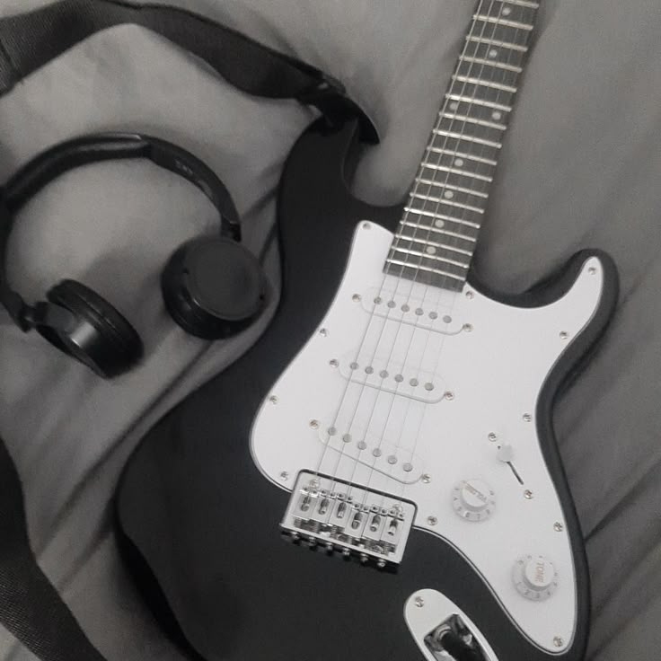

-DISTINTOS GENEROS-
Es agradable escuchar y poder tocar musica, algo que me ayuda a hacer la mayor parte
de mis actividades diarias, algo que puede ser tranquilizante, un hobby que es de
diario, una forma incluso de expresion de la vida y todo lo que eso puede llegar a
significar, sobre todo para mi.
